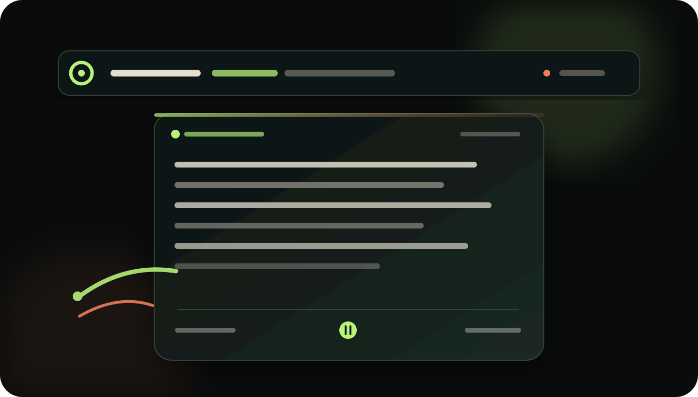

菜单栏逐行阅读
像歌词一样显示当前行。默认每秒推进，也可以按快捷键逐行前进或暂停。
WEFISH / DESKTOP READER
一个安静的跨平台桌面阅读器。书架、章节、进度、摘录和逐行阅读，被收进菜单栏、托盘和一枚小窗口。
v1.0.0 · macOS · Windows · WeChat Reader Web Session

01 / QUIET SURFACE
WeFish 把“打开一本书”拆成更轻的动作：点击菜单栏，按一下快捷键，或者让一行文字自己向前走。
像歌词一样显示当前行。默认每秒推进，也可以按快捷键逐行前进或暂停。
章节被切成稳定的阅读页，预加载后两页和下一章首屏，翻页有明确的边界。
快速跳章节、拖动位置，阅读偏移和时长会在网络恢复后继续上报。
macOS 菜单栏与 Windows 托盘共用同一套 WeRead 协议处理和本地服务。
02 / A SMALL ROUTINE
03 / VERSION 1.0
源代码、协议说明、许可证和构建流程都在仓库里。